From the idea folder
The Art Department
Sketches, mascots and mock logos from the club's archived ideas. Every club logo starts as a bad idea in a notebook.
Mascot Contenders
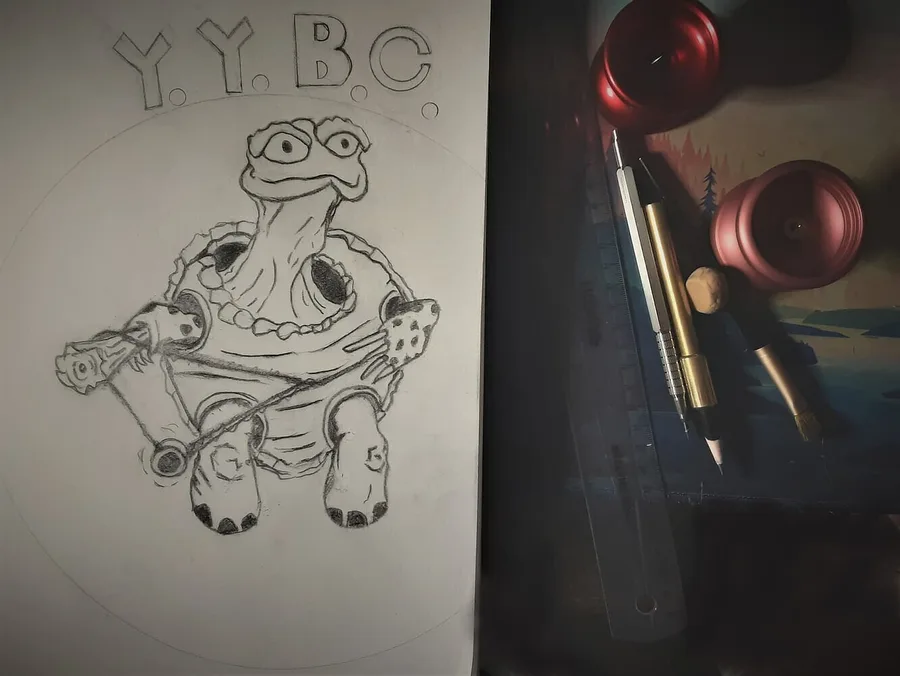
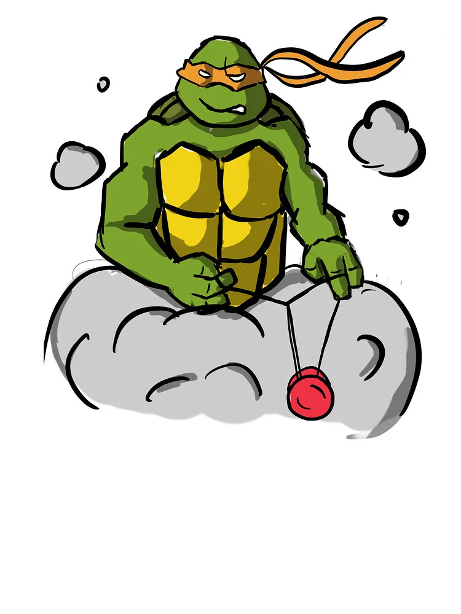
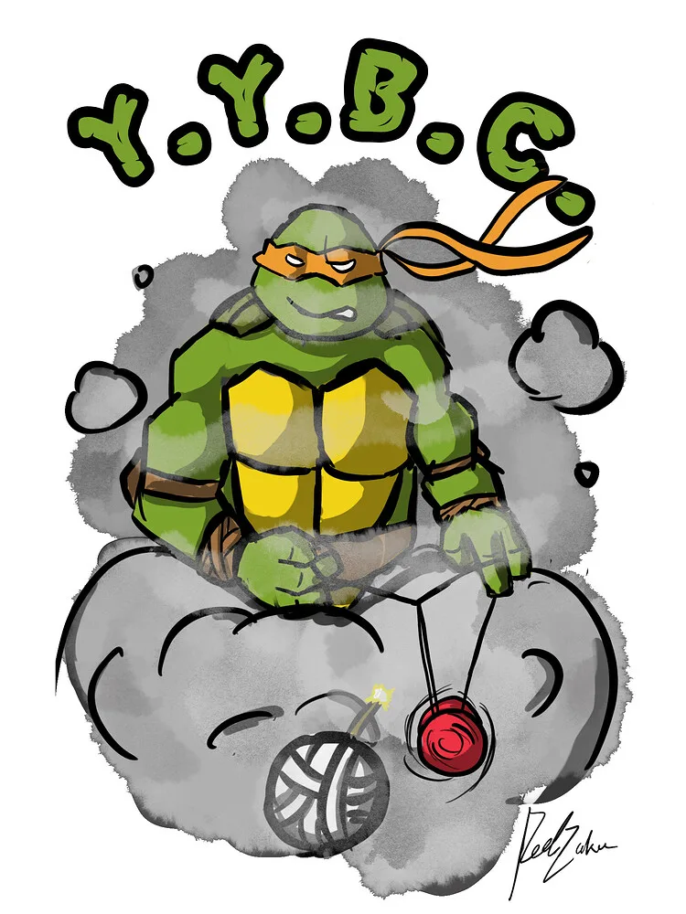
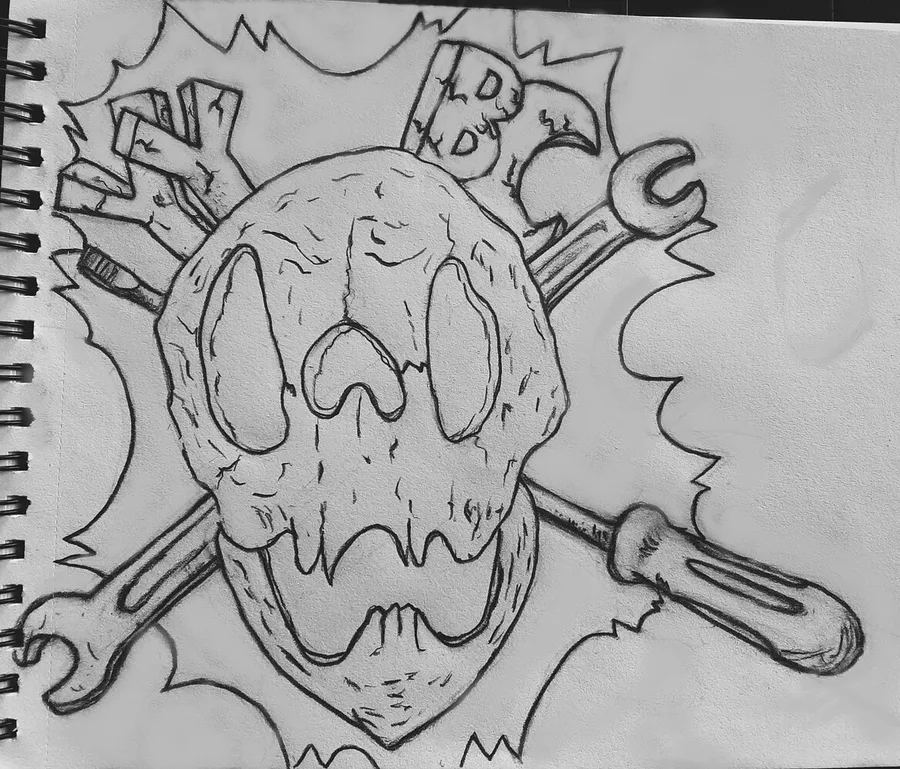
Bombs and Lawns
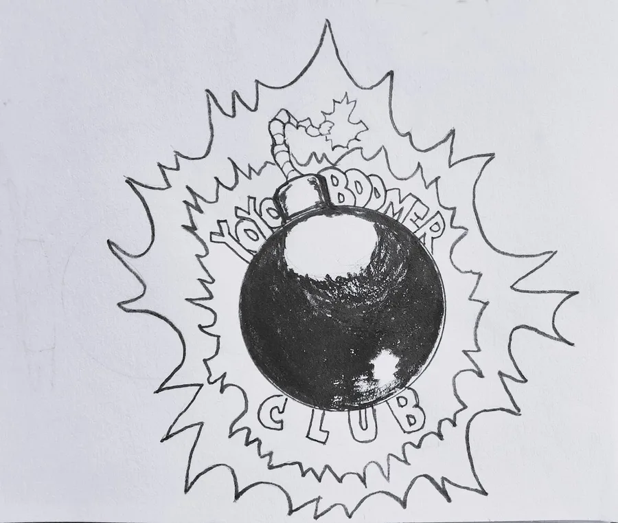
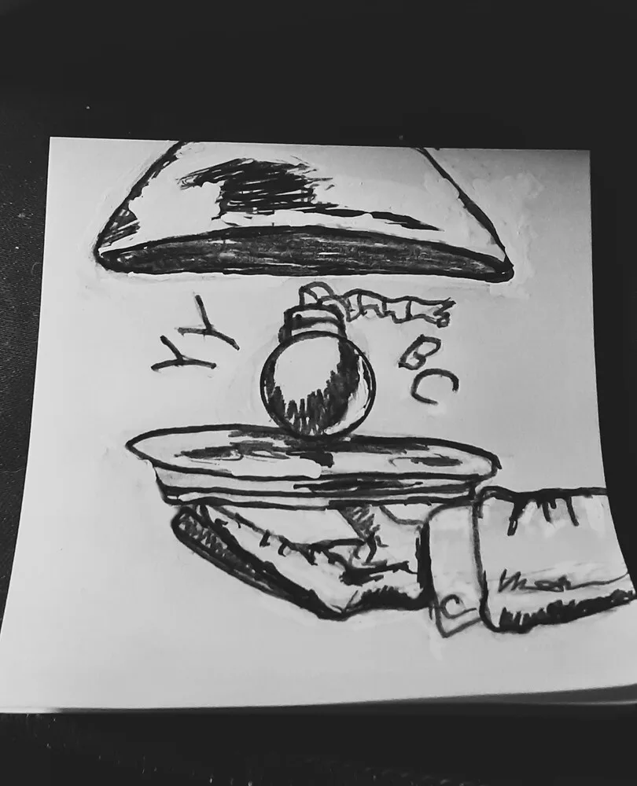
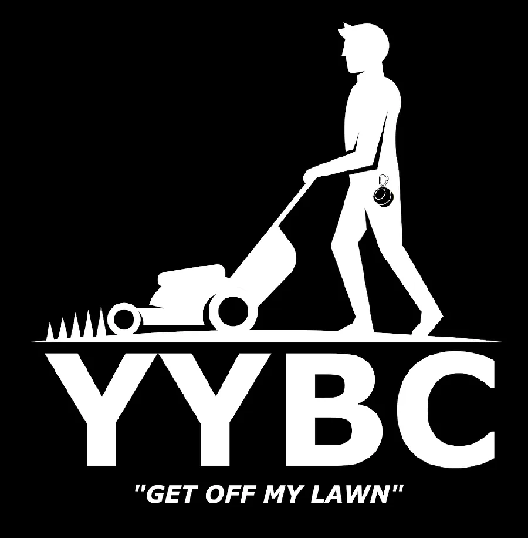
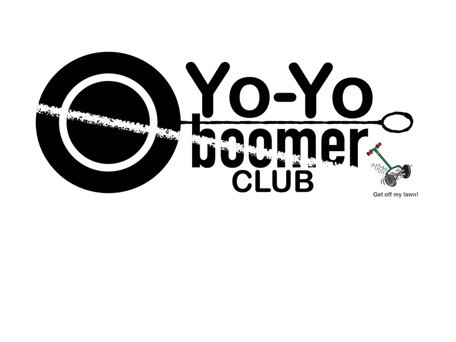
Event Logos
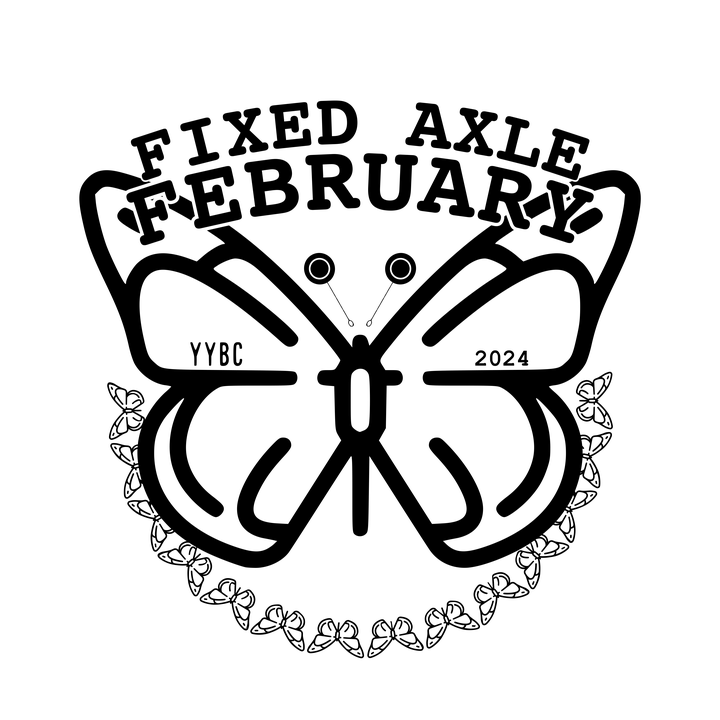
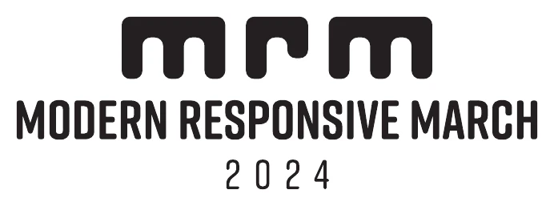
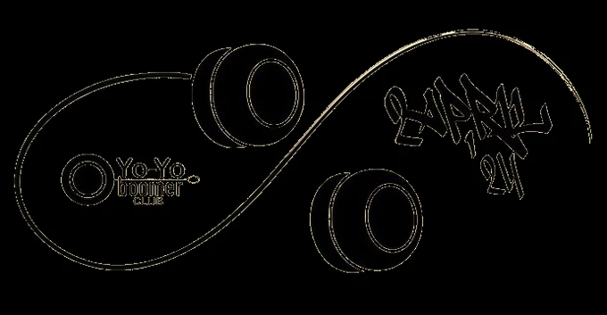
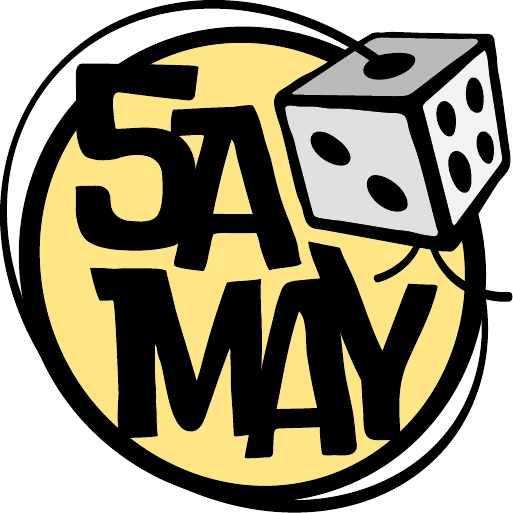
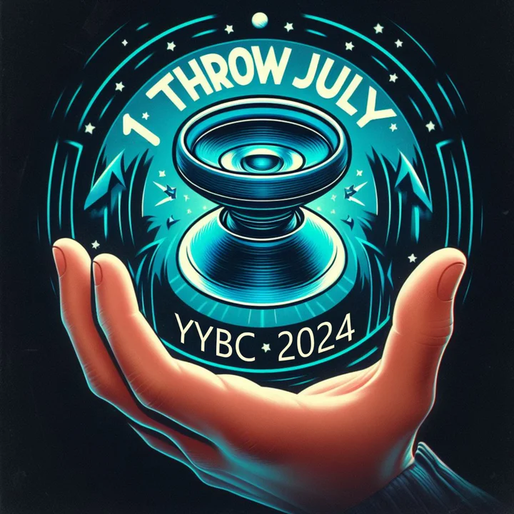
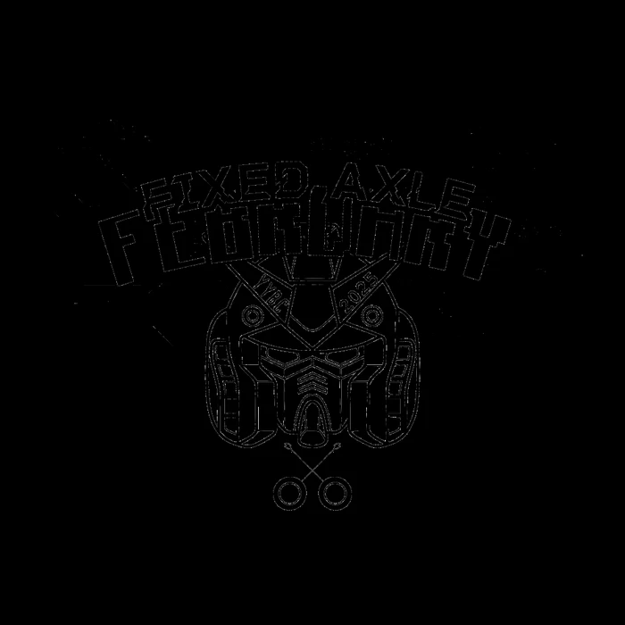
Space Wagon and Stickers
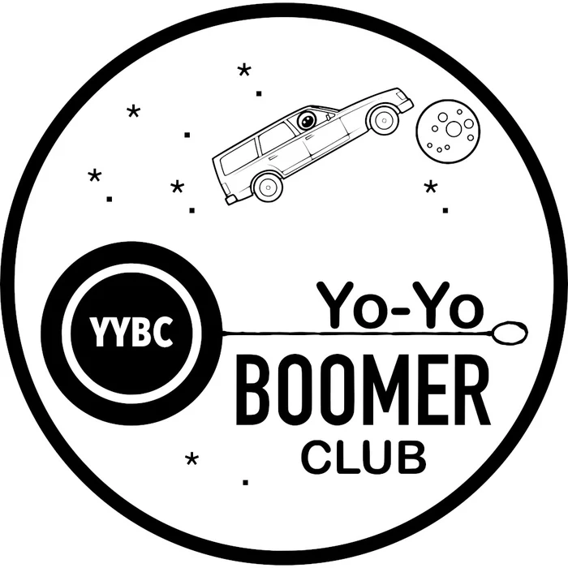
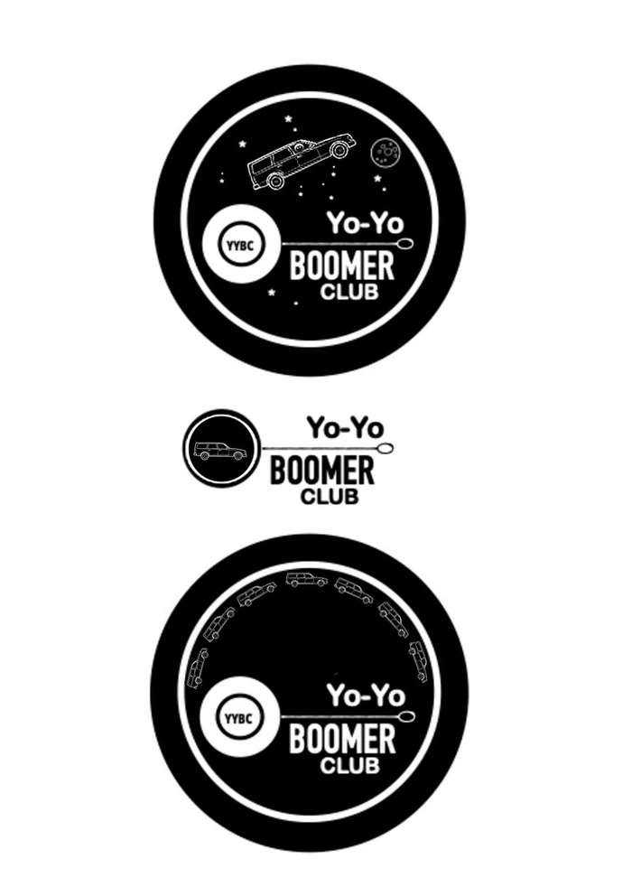
The Real Thing
The logo we ended up with is at the top of every page. Some of these ideas are still floating around on pins and stickers.